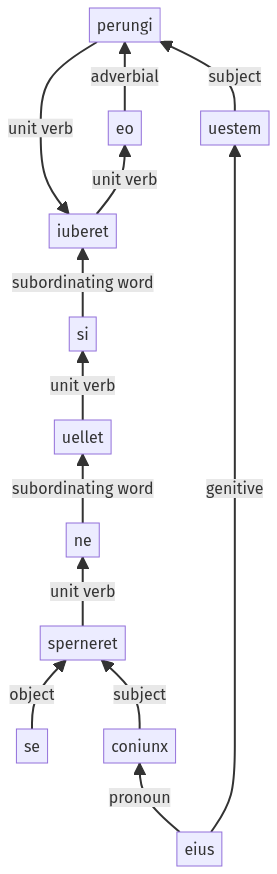

Hyginus, Fabulae, 34pr.2.24-34pr.2.34a
34pr.2.1-34pr.2.23a | 34pr.2.35-34pr.2.40a
Sentence 469
34pr.2.24-34pr.2.34a
si uellet ne se coniunx sperneret, eo iuberet uestem eius perungi.
2 si uellet
3 ne se coniunx sperneret
1 eo iuberet
2 uestem eius perungi
si uellet ne se coniunx sperneret, eo iuberet uestem eius perungi.
Highlighting:
- connecting words
- unit verb
- subject
- object
Color code:
- independent clause (level 1, transitive verb)
- subordinate clause (level 2, intransitive verb)
- subordinate clause (level 3, transitive verb)
- indirect statement (level 2, transitive verb)
